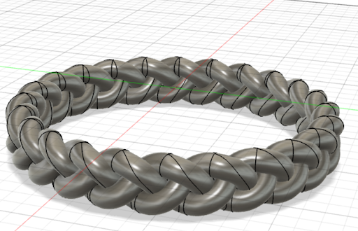
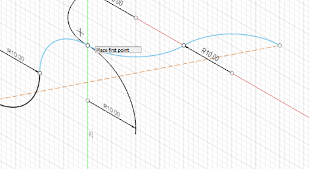
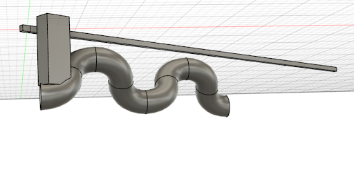

SLA printing is the process of using UV light to solidify layers of resin to create an object that was previously designed on a CAD program. The process of using Uv light to solidify layers of resin was first invented by Hideo Kadoma in the 1980s.Safety is very important when it comes to resin based printing because it can cause rashes. The SLA printer in the lab is the Form 3 and is made by Formlabs.
Photo credit Formlabs.com

I chose the braided ring tutorial video. The one thing I liked about the video was that it showed all the person was doing to create the ring step by step. However, the person went through the steps so quickly that it was hard to tell what they were doing at points. It took me an hour to figure out how to rotate the copied arc. I wish there was a voice over or written instructions that said exactly what they were doing.

The five new tools that I learned in Fusion 360 was the copy tool,the pivot tool, the construction sketch tool,The pipe tool, and the combine tool.
I had to use the copy and pivot tool in tandem with eachother first copying the arc, selecting a point to pivot it, then rotating it
The construction sketch tool creates a dotted line between two points. see above picture

The pipe tool creates a pipe around a selected object the pipe follows the flow of the selected
The combine tool combines two diffrent objects in the picture I had combined a copy of the pipe with the original pipe. Then connected it to the unfolded circle then folded the circle to create a ring.